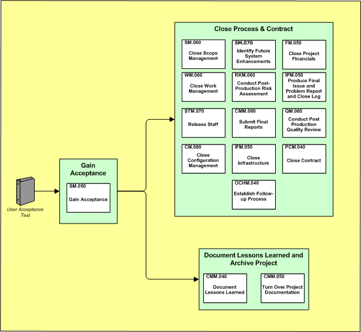

OUM |
Phase Overview |
||
Method Navigation |
Current Page Navigation |
||
|
|
||||||||
The purpose of the Project Closure phase is to validate that the project work products or task outputs are complete and are aligned with the customer’s expectations, gain final acceptance and close the project. The team must also review the project work products for examples of leading practices. These work products should be secured for reuse, collection and retention of empirical data.
A project or phase of a project will be considered “closed” when all Project Management and work products have been completed, approved by necessary approving bodies and archived.
Two types of closure activities are described in Manage:
Administrative Closure:
Administrative closure is classified as the mechanical and analytical steps associated with the closure activities associated with either the conclusion of a phase or project. These steps are clerical, organizational, and diagnostic in nature and are meant to serve as a vehicle to bring to a successful conclusion (with the appropriate level of rigor) all aspects of project operations.
Typical tasks associated with administrative closure procedures are:
Contractual Closure:
Contractual closure is classified as the obligatory steps associated with the completion of contractual requirements. Contractual closures can be with external vendors or internal through service level agreements. Typical tasks associated with contractual closure procedures are:
The following is a list of the objectives of this phase:
The Manage context diagram illustrates the processes within the Project Closure phase.

This section discusses techniques that may be helpful in conducting Project Closure including the managing the administrative and contractual closing of the project with the accepting organization and the delivery organization. Techniques you find most useful are communicating, negotiating, and conflict resolution. The general approach recommended for Project Closure is to make the accepting organization responsible for conducting agreed upon acceptance tasks, such as testing. However, specific terms and conditions may be detailed in the contractual agreement and should be reflected in project management plans.
When conducting Project Closure, remember to continue to manage changes, issues, and problems throughout acceptance. Last minute issues and problems can be quite common, as customer stakeholders realize that they have only a short time remaining to influence project results. The project sponsor and project manager, from the accepting organization, should take a leadership role at this point in the project to control the introduction of new issues which may be more accurately classified as future enhancements. Use of the MoSCoW list and conducting incremental reviews, throughout the engagement can assist in avoiding such issues
It is easy to focus on contractual and resource issues during the final days of a project. However, do not forget that your project has advanced the capabilities of the delivery organization and has hopefully produced a product that the delivery team and the accepting organization are proud of. While you have the time, staff, and accepting organization contacts available, make sure to feed project results back to the delivery organization. Use the Project End Report to capture information about the project for future use and to benefit future projects. The Satisfaction Report will provide objective information about project results to the delivery organization management team.
Coordinate closely with your delivery organization business manager about resource needs after the project closes (or the engagement is considered complete). There may be uncompleted negotiations regarding a support or ongoing maintenance requirements which could retain some of the project staff. Ideally, post-project commitments have been established before the project begins. Depending on the length of the project requirements may have changed regarding what happens after the project. Once post-project commitments to the accepting organization have been refined, staff can be reallocated. In practice, as the project is in the completion phase, then reallocation can be started.
Physical resources can easily become lost or intermixed in a project infrastructure shared with the accepting organization. If you have maintained accurate equipment records, you should be able to sort out which equipment, licenses, and materials are to be retained by the delivery organization and which will be retained by the accepting organization. The project agreement or contract contains this information and should be reviewed as part of this closing phase.
At this point in the project, previous phase acceptances should have already established a clear pattern of quality compliance. Use the final Quality Report as a tool to support your final approval, or to help resolve any contractual disputes or issues regarding the quality of your project work products
The transfer of the Configuration Management environment to the accepting organization should be coordinated with transfers of other project environments, specifically those for development, maintenance, and testing. The amount of transfer is project-specific, and should be worked out well in advance, ideally as part of the contractual agreement.
Configuration Management is also responsible for transferring archive copies of project work products to your consulting practice. Follow your practice policies and procedures about archiving project work products. Consider these questions before contributing your work:
Attention: Take legal restrictions seriously. The accepting organization may have confidential information that if disclosed, even as a sample, to their competitors would be detrimental to their position in the marketplace. The delivery organization has an obligation to protect the information of accepting organization. You may be placing the accepting organization in legal and financial risk if you were to disclose such information.
If you are using a Scrum approach, use the Managing an OUM Project using Scrum technique. Use this link to access the phase-specific guidance for Scrum.
This phase includes the following tasks:
| ID | Task | Work Product | Key |
Type |
|---|---|---|---|---|
Gain Acceptance |
||||
SM.030 |
Final Acceptance Certificate |
Y |
Core |
|
Close Processes and Contract |
||||
SM.060 |
Closed Scope Management |
Core |
||
SM.070 |
Future System Enhancements |
Core |
||
FM.050 |
Closed Project Financials |
Y |
Core |
|
WM.060 |
Closed Work Management |
Y |
Core |
|
RKM.060 |
Post-Production Risk Assessment |
Y |
Core |
|
IPM.050 |
Closed Issue and Problem Log |
Core |
||
STM.070 |
Released Staff |
Core |
||
CMM.060 |
Submit Final Reports | Final Reports | Core |
|
QM.060 |
Post-Production Quality Review |
Y |
Core |
|
CM.080 |
Closed Configuration Management |
Core |
||
IFM.050 |
Closed Infrastructure |
Core |
||
PCM.040 |
Closed Contract |
Y |
Core |
|
OCHM.040 |
Follow-up Process |
Core |
||
Document Lessons Learned and Archive Project |
||||
CMM.040 |
Document Lessons Learned | Lessons Learned | Y |
Core |
CMM.050 |
Turn Over Project Documentation | Project Archives | Y |
Core |

These factors have been shown to be critical to the success of this phase:
At the end of this phase, the following criteria should be met or exceeded

Copyright © 2006, 2016, Oracle and/or its affiliates. All rights reserved.